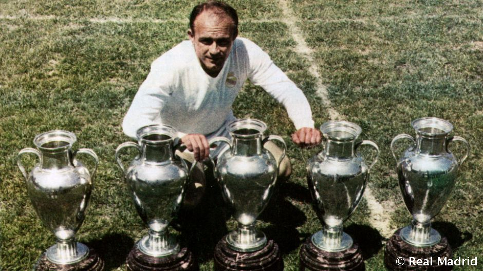
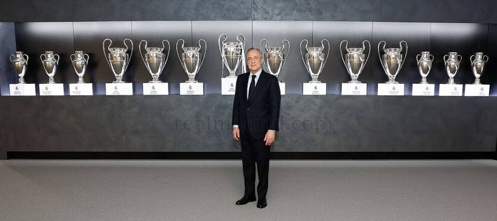

El Real Madrid C.F. es el club más exitoso en la historia del fútbol
Inicios
El Real Madrid fue fundado en 1902. Julián Palacios es el primer presidente, pero fue Juan Padrós, catalán y de Barcelona, quien formalmente constituyó la institución ese año. El interés en el fútbol crecía tanto en España que el Madrid propuso realizar un torneo en honor al rey Alfonso XIII. La iniciativa se convirtió en la Copa de España (Copa del Rey).
Con un creciente número de socios, el club vio la necesidad de cambiar los terrenos donde jugaba para aumentar el número de espectadores y poder recaudar más dinero. Se desplazó al estadio de O’Donell. Y fue entonces, en 1920, cuando el Rey de España concedió el título de Real al club.
Al inicio de los años 20, el Real Madrid volvió a su rol pionero en el fútbol español. El equipo hizo una serie de viajes fuera de España, con enorme éxito internacional. El Real Madrid es uno de los fundadores del Campeonato Nacional de Liga, en 1928, y jamás ha descendido a Segunda División.
El Real Madrid había aceptado el hecho de que el éxito que buscaba solo podía ser podía ser posible con los mejores jugadores. El portero Zamora y los defensas Ciriaco y Quincoces fueron fichados. El trío formaba la mejor defensa del mundo. La temporada 1931-32 fue histórica para el equipo entrenado por Lippo Hertza. Los merengues terminaron sin liga sin perder un solo partido. Fue el inicio de una era de dominancia del Real Madrid durante la II República: 2 ligas y 2 Copas en 4 años.
En 1943 Santiago Bernabéu se convirtió en el presidente del club. Antiguo jugador y entrenador, se convertiría en el hombre más importante de la historia del Real Madrid. Formó un equipo plagado de leyendas: el argentino Alfredo di Stéfano, el húngaro Ferenc Puskas, el francés Raymond Kopa o el español Francisco Gento. Con eso ganaría 5 Copas de Europa consecutivas, récord histórico que aún hoy se mantiene: la mayor dinastía de la historia del fútbol.
Historia reciente
A finales del siglo XX, el Real Madrid comenzaría una nueva época dorada. Volvió a ser campeón de Europa, con 3 Ligas de Campeones en 5 años: la Séptima en 1998, la Octava en el 2000 y la Novena en 2002. El entonces canterano Raúl y leyendas como Hierro, Roberto Carlos o Redondo acompañaron los triunfos. En el año 2000 Florentino Pérez llegó a la presidencia y comenzó la denominada época de los Galácticos. En esos 4 primeros años ganó 1 Champions League (la Novena) 2 ligas y creó un equipo de ensueño con las mejores estrellas del mundo del fútbol: Figo, Zidane, Ronaldo y Beckham se unían a Raúl, Hierro y Casillas.
En el segundo mandato de Florentino, desde el 2009 hasta hoy en día, fichó al que se convertiría en el mejor jugador de la historia: Cristiano Ronaldo. También a una pléyade de estrellas como Benzema, Xabi Alonso, Luka Modric, Gareth Bale o Toni Kroos. Técnicos estrellas como José Mourinho, Carlo Ancelotti y la antigua leyenda del fútbol Zinedine Zidane entrenaron al equipo. En los años 2014 a 2016, el Real Madrid ganó 2 Champions League en dos finales de infarto contra el rival citadino, el Atlético de Madrid, de la mano de un desempeño increíble de Cristiano Ronaldo y con heroicas actuaciones del capitán y leyenda Sergio Ramos. La Décima llegó en 2014 tras 12 años de sequía europea gracias a un gol en el minuto 93 y la Undécima en una tanda de penaltis en 2016. El club además ganó una liga en 2012 que batió todos los records nacionales con 100 puntos y 121 goles.
Tanto las temporadas 2016-2017 como 2018-19 fueron históricas. En 2017 el Real Madrid se convirtió en el primer equipo que repetía título en el formato Champions League y la primera vez desde 1958 que el club obtenía tanto la Liga como la Copa de Europa. Junto al Mundial de Clubes y las Supercopa de España y Europas se convirtió en el mejor año de la historia del Real Madrid como club de fútbol. En la temporada 2018-19, el Real Madrid se convirtió en el primer club deportivo que ganaba tanto la Copa de Europa de fútbol como de baloncesto (la Décima de esta sección) el mismo año. La 13ª Copa de Europa fue también la tercera consecutiva y la cuarta en 5 años. Nuevamente, una dinastía comparada con ninguna otra del fútbol… excepto el Real Madrid de Bernabéu, Di Stéfano y Gento.
El Real Madrid es el rey de Europa y España y aunque los rivales han ido y venido para enfrentarse a él en la historia del fútbol, nadie se acerca a su legado.
Adaptado de: Primavera blanca.
El Real Madrid C.F. es el club más laureado de todos los tiempos
- Copa de Europa/ UEFA Champions League
- Títulos (14) – record: 1955–56, 1956–57, 1957–58, 1958–59, 1959–60, 1965–66, 1997–98, 1999–2000, 2001–02, 2013–14, 2015–16, 2016-17, 2018-19, 2021-22
- La Liga
- Títulos (35) – record: 1931–32, 1932–33, 1953–54, 1954–55, 1956–57, 1957–58, 1960–61, 1961–62, 1962–63, 1963–64, 1964–65, 1966–67, 1967–68, 1968–69, 1971–72, 1974–75, 1975–76, 1977–78, 1978–79, 1979–80, 1985–86, 1986–87, 1987–88, 1988–89, 1989–90, 1994–95, 1996–97, 2000–01, 2002–03, 2006–07, 2007–08, 2011–12, 2016-2017, 2019-20, 2021-22
- Copa del Rey
- Títulos (19): 1905, 1906, 1907, 1908, 1917, 1934, 1936, 1946, 1947, 1961–62, 1969–70, 1973–74, 1974–75, 1979–80, 1981–82, 1988–89, 1992–93, 2010–11, 2013–14
- Copa de la UEFA
- Títulos (2): 1984–85, 1985–86
- Supercopa de Europa
- Títulos (4): 2002, 2014, 2016, 2017
- Copa Intercontinental
- Títulos (3) – shared record: 1960, 1998, 2002
- Mundial de Clubes de la FIFA
- Títulos (3): 2014, 2016, 2017
- Supercopa de España
- Títulos (10): 1988, 1989, 1990, 1993, 1997, 2001, 2003, 2008, 2012, 2017
- Copa Eva Duarte (anterior Supercopa de España)
- Título: 1947
- Copa de la Liga
- Título: 1984–85
- Trofeo FIFA al mejor club del siglo XX
- Entregado a princiddio de siglo al entonces presidente Florentino Pérez.
Adaptado de: Primavera blanca.
Estadio Santiago Bernabéu
El estadio Santiago Bernabéu tiene una capacidad de 81.000 espectadores. En torno a un 80% del aforo está ocupado por socios del Real Madrid que tienen un abono, mientras que el resto de las entradas se venden al público general. La grada de animación del Real es la Grada FANS RMCF. Nació con el espíritu de unir a los madridistas que quieren animar al equipo incondicionalmente tanto en el Santiago Bernabéu como fuera de él. Quiere recibir a todos los madridistas que creen en una animación sin violencia, política, racismo e intolerancia, abierto a todas las edades y con un solo sentimiento: madridismo. 2000 madridistas de todos los países, ideologías, razas, creencias y sexos acuden a la Grada FANS vestidos del blanco del Real Madrid para apoyar a su equipo cada partido.

Adaptado de: Primavera blanca.
¡Suscríbete como Madridista!
___________________
Copyright © Federico Melo Barrero. Todos los derechos reservados. Página web construida para el curso Desarrollo de Software.